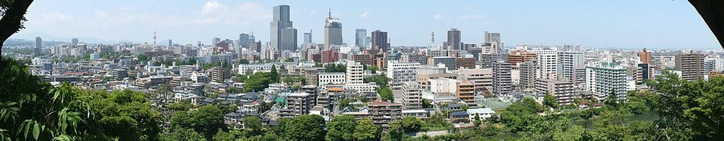
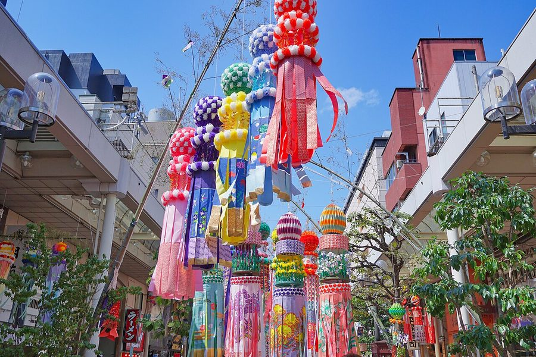
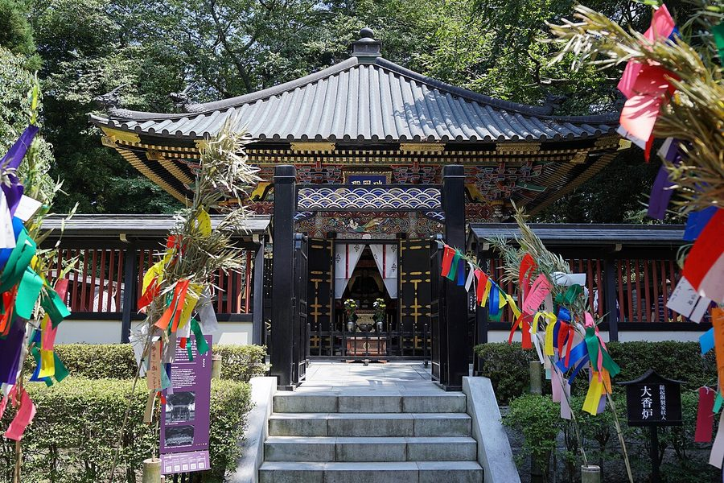
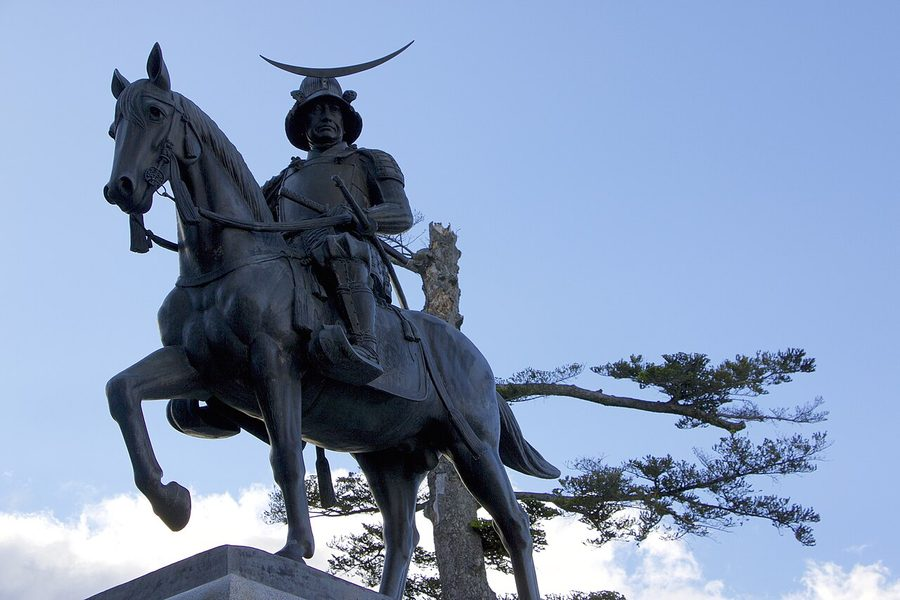

宮城県仙台市の日帰り温泉・銭湯・サウナ（44件）
寄り道スポット検索アプリ「ヨッテコ」の収録データから、宮城県仙台市の日帰り温泉・銭湯・サウナを営業時間・料金つきで一覧にしました（2026年8月時点）。
最も安いのは仙台市シルバーセンター（290円）。最も遅くまで入れるのは駅前人工温泉 とぽす仙台駅西口（翌9:30まで）。朝風呂ならスパメッツァ仙台 竜泉寺の湯（6:00開店）。
宮城県仙台市はどんなまち？
数字で見る🔍宮城県仙台市
まちの横顔




- 地形: 仙台市都心部の周囲には広瀬川や青葉山などの自然が広がり、都心部にも街路樹などの緑が多いことから「杜の都」という雅称を持ちます。宮城県の中部に位置する県庁所在地で、5つの行政区を持つ政令指定都市として、東北地方で唯一の100万都市でもあります。
- 観光: 東北を代表する港湾・サーフスポットの仙台港が北東部に、宮城県内で宿泊客数第1位を誇る秋保温泉が南西部に、宮城県内で利用者数1位のスプリングバレー泉高原スキー場が北西部にあります。中国では魯迅が留学した都市としても知られています。
- 特産と文化: 市民が中心となって創り上げた七夕まつり（仙台七夕）や、公的財源に頼らない大規模イルミネーションイベントのSENDAI光のページェント、街角無料音楽祭の定禅寺ストリートジャズフェスティバル、そのバリアフリー版のとっておきの音楽祭など数々の都市イベントを生み出し、運営ノウハウやフォーマットを市外・県外に移出する文化都市でもあります。「学都仙台」「楽都仙台」というキャッチコピーも用いられます。
寄り道充実度（全国偏差値）
偏差値・順位は、ヨッテコ収録データ（2026年8月時点・26,033件）を市区町村別に集計した施設数の全国分布（1,728市区町村）から毎回算出しています。カードを押すとカテゴリ別の分析に切り替わります。
日帰り温泉から見た宮城県仙台市
市内の日帰り温泉は44件、全国33位タイ（上位1.9%）。——数のうえでは、はっきり湯の多いまち。
- 露天風呂がある店は61%、全国水準（46%）の1.3倍。広瀬川や青葉山などの自然に恵まれ「杜の都」と呼ばれる、5つの行政区を持つ政令指定都市。61%という数字が、外で湯に浸かるまちであることを示しています。
- 入浴料の中央値は1,100円でした（判明34件）。全国の650円と比べて69%高い水準です。宿泊客数で宮城県内1位を誇る秋保温泉を抱える、東北地方唯一の100万都市。設備や湯の質を含めた、この土地の相場ということになります。
出典: 施設データ=ヨッテコ収録データ（26,033件・2026年8月時点）。偏差値・全国順位・全国水準は全1,728市区町村の分布から毎回算出。 / 人口=総務省「住民基本台帳に基づく人口、人口動態及び世帯数」（2026年1月1日現在） / 面積=国土地理院「全国都道府県市区町村別面積調」（2026年4月1日時点） / 森林率=農林水産省「2025年農林業センサス（農山村地域調査）」市区町村別林野率（2025年、林野率（林野面積÷総土地面積）） / 年平均気温=気象庁「平年値（1991-2020年）」。市区町村の代表点（国土交通省「大字・町丁目レベル位置参照情報」）から最も近い観測点の値 / まちの解説=日本語版Wikipedia「仙台市」（https://ja.wikipedia.org/wiki/仙台市、2026年8月21日取得）より作成（CC BY-SA 4.0） / 写真=Wikimedia Commons（各キャプションに作者・ライセンスを記載）
曜日別の営業施設数
| 月 | 火 | 水 | 木 | 金 | 土 | 日 |
|---|---|---|---|---|---|---|
| 42 | 41 | 42 | 42 | 43 | 44 | 43 |
火曜日が最も休みが多く（各3件が定休）、年中無休は36件です。※営業時間データのある44件で集計
入浴料金の分布（大人）
| 500円以下 | 5件 | |
| 501〜800円 | 3件 | |
| 801〜1,200円 | 16件 | |
| 1,201円以上 | 10件 |
料金が確認できた34件で集計。
施設一覧
| 施設 | 営業時間 | 料金（大人） |
|---|---|---|
| IZUMI PEAK BASE 泉ピークベース 天然温泉露天風呂 null | 08:00〜18:00 | 2,200円 |
| LAST SAUNA ラストサウナ サウナ 仙台市内のプライベートサウナ。男性限定のフリーサウナと男女利用可の完全個室サウナを備えている。 | 10:00〜24:00 | 1,100円 |
| La楽リゾートホテル グリーングリーン 天然温泉露天風呂サウナ 作並温泉の大露天風呂と低温サウナを備えた日帰り温泉。全室オーシャンビュー客室の宿で、家族向けの日帰り入浴プランが利用でき… | 10:00〜22:00 | 1,100円 |
| Lita-sauna リタサウナ サウナ | 08:00〜20:00（木休） | 3,000円 |
| SAUNA totonou 仙台宮城野店 サウナ | 09:00〜18:00 | — |
| antique shop & cafe HambletonHall サウナ | 09:00〜18:00 | — |
| はんじゅんまくのゆ 汗蒸幕のゆ 露天風呂サウナ 韓国伝統の温熱療法である汗蒸幕（はんじゅんまく）を備えた本格サウナ施設。汗蒸幕、ロッキーサウナ、紫水晶・黄土サウナなど個… | 09:00〜25:00 ※曜日により異なる | 1,200円 |
| ゆ～とぴあ仙台南 露天風呂サウナ 東北初の貸切バレルサウナと大型ロウリュウサウナを完備した温浴施設。全6種類の多彩なお風呂で至福のひと時を提供します。 | 07:00〜26:00 | 1,000円 |
| アクアイグニス仙台 天然温泉 藤塚の湯 天然温泉露天風呂サウナ | 09:00〜21:00 ※曜日により異なる | 900円 |
| アパヴィラホテル仙台駅五橋 露天風呂 | 09:00〜18:00 | 4,500円 |
| サウナ＆カプセル キュア国分町 露天風呂サウナ | 00:00〜24:00 | — |
| スパメッツァ仙台 竜泉寺の湯 露天風呂サウナ 竜泉寺の湯グループのスーパー銭湯。東北のスーパー銭湯・サウナ好きが集う施設として機能し、東北各地の作り手とコラボしたグッ… | 06:00〜26:00 | 1,100円 |
| ドーミーインEXPRESS 仙台広瀬通 サウナ ドーミーインEXPRESS仙台広瀬通。男性専用大浴場と高温サウナを備える。沸かし湯施設。 | 15:00〜22:00 | 4,500円 |
| ドーミーインEXPRESS仙台シーサイド 天然温泉 海神の湯 天然温泉露天風呂サウナ 仙台シーサイドのドーミーイン。宮城県沿岸の天然温泉「海神の湯」を大浴場で提供。 | 15:00〜20:00 | 1,070円 |
| ホテル ニュー水戸屋 天然温泉露天風呂サウナ | 11:00〜15:00 | 1,300円 |
| ホテル瑞鳳 天然温泉露天風呂サウナ 磊々峡を眼下に望む秋保温泉の高級旅館。6種類の露天風呂を備えており、日本庭園内での湯めぐりが特徴。日帰りはプール付きプラ… | 10:00〜15:00 | 2,430円 |
| ホテル華乃湯 天然温泉露天風呂 秋保温泉の自慢の宿。自噴する湯量豊富な自家源泉は「神の湯」と呼ばれる。源泉かけ流しの露天風呂と内湯で湯めぐりが可能。 | 10:30〜14:00（火・金休） | 1,200円 |
| ミネラル温泉薬石浴 嵐の湯 仙台店 | 10:00〜21:00（火休） | 3,000円 |
| 仙台コロナワールド 天然温泉 仙台コロナの湯 天然温泉露天風呂サウナ | 06:00〜26:00 | 1,200円 |
| 仙台市シルバーセンター 仙台市シルバーセンター内の温水プール・浴室施設。高齢者や障害者向けに設計された公共の入浴施設です。 | 17:00〜20:00 | 290円 |
| 仙台湯処 サンピアの湯 天然温泉露天風呂サウナ 9階建ての広大な温浴施設。約100席の休憩スペースや約9000冊の漫画・書籍を備えた読書スペア、複数の庭園など、温泉のほ… | 09:00〜26:00 | 1,100円 |
| 作並温泉 湯の原ホテル 天然温泉露天風呂 | 11:00〜16:00 | 1,000円 |
| 作並温泉 神の湯 作並ホテル 天然温泉露天風呂 | 11:00〜17:00 | 800円 |
| 作並温泉 都の湯 天然温泉 | 10:00〜19:00（水・木休） | 300円 |
| 作並湯の駅 ラサンタ 美足の湯 天然温泉 作並温泉の観光交流館。源泉かけ流しの足湯が自慢で、冬季を除き無料で利用できる。 | 09:00〜16:00 | — |
| 大江戸温泉物語 Premium 仙台作並 天然温泉露天風呂サウナ 大江戸温泉物語グループの Premium仙台作並。日帰り入浴と食事付きディナーバイキングプランが利用できます。 | 07:00〜18:00 ※曜日により異なる | 900円 |
| 天守閣自然公園 市太郎の湯 天然温泉露天風呂 | 10:00〜17:00 ※曜日により異なる | 900円 |
| 天然温泉 萩の湯 ドーミーイン仙台駅前 天然温泉露天風呂サウナ ドーミーインチェーンの天然温泉施設。天然温泉『萩の湯』と高温サウナ、露天風呂を備える。 | 15:00〜22:00 | — |
| 天然温泉 青葉の湯 ドーミーイン仙台ANNEX 天然温泉露天風呂サウナ | 09:00〜18:00 | — |
| 奥州秋保温泉 蘭亭 天然温泉露天風呂 | 11:00〜17:00（火休） | 1,100円 |
| 心和む名湯の宿 曽良一 天然温泉露天風呂 | 11:00〜14:30 | 950円 |
| 愛子天空の湯 そよぎの杜 天然温泉露天風呂サウナ 錦ケ丘の高台に位置し、泉ヶ岳を一望できるロケーション。地下1,100mから湧き出した塩化物泉の天然温泉が特徴で、美肌効果… | 09:00〜25:00 | 1,220円 |
| 明日の湯温泉 天然温泉 | 10:00〜22:00 | 800円 |
| 神ヶ根温泉 かんかね温泉 天然温泉 | 12:00〜18:00 | — |
| 秋保グランドホテル 天然温泉露天風呂サウナ 磊々峡を眼下に望む秋保温泉の大規模ホテル。本館と別館に複数の露天風呂（伊達の湯、三春の湯、梵天の湯、愛姫の湯）を備え、季… | 10:00〜15:00 | 1,200円 |
| 秋保リゾート ホテルクレセント 天然温泉 地下800mから湧き出る源泉を使用した湯量豊富な自家源泉の天然温泉。肌ざわりが柔らかく、体の芯から温まるお湯が特徴。 | 11:30〜16:00 | — |
| 秋保・里センター 寿右ェ門の湯 天然温泉 秋保温泉郷の観光交流施設。源泉かけ流しの足湯が自慢で、春～秋は無料で利用できる。 | 09:30〜18:00 | — |
| 秋保森林スポーツ公園 森林の湯 | 11:00〜16:30 | 700円 |
| 秋保温泉 篝火の湯 緑水亭 天然温泉露天風呂サウナ 敷地から湧く自家源泉を活かした露天風呂「篝火の湯」と大浴場「緑水の湯」を備え、約20の効能を持つ泉質が自慢の温泉。 | 11:00〜15:00（月休） | 1,500円 |
| 秋保温泉共同浴場 天然温泉 | 07:30〜20:00 | 300円 |
| 秋保風雅 天然温泉露天風呂サウナ | 09:00〜18:00 | — |
| 駅前人工温泉 とぽす仙台駅西口 露天風呂サウナ 駅前立地の人工温泉施設。露天風呂、壺風呂、高温サウナなど多彩な浴槽を完備。東北屈指の高温サウナが自慢。 | 11:00〜33:30 | 1,300円 |
| 駒の湯 サウナ 仙台の国分町で昭和から続く昔ながらの銭湯。漁師さんたちに愛され、松島のペンキ画が特徴の浴室。 | 15:00〜22:00（水・日休） | 500円 |
| 鶴の湯 サウナ | 15:00〜22:30（月休） | 500円 |